Maandmenu A
- Ka Lee Kok
- Foe Yong Hai
- Babi Pangang
- Kip kerrie
- Saté
€ 29,50
Stationsstraat 57, Ermelo
De échte Chinese keuken: klassiekers die u kent, en Kantonese en Szechuan gerechten om te ontdekken.
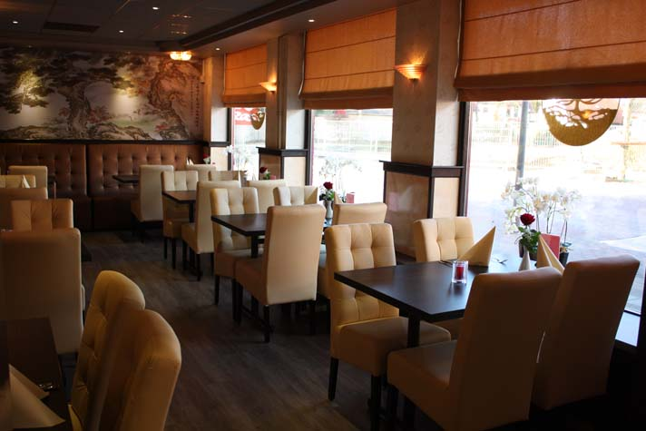
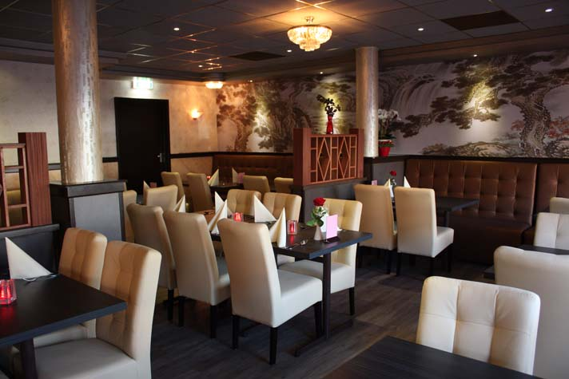
Ling-fa is de naam voor de Chinese lotusbloem. Dat symbool is niet zomaar gekozen: de lotusbloem staat voor het echte, het pure, het smaakvolle, het mooie. En dat is precies wat wij in ons restaurant nastreven.
Wij werken er elke dag aan om het u naar de zin te maken. Dat heeft alles te maken met de Chinese traditie van gastvrijheid. U bent onze gast.
Ling-Fa laat u genieten van de échte Chinese keuken. Bijvoorbeeld van de klassieke gerechten die u al kent, zoals babi pangang en foe yong hai. Maar u zult zien dat de Chinese keuken nog veel meer te bieden heeft. Proef eens de authentieke Chinese gerechten, zoals de Kantonese of de speciale Szechuan gerechten. In de grote variatie van Chinese streekgerechten doet u nog veel meer heerlijke ontdekkingen.
Voor reserveringen of meer informatie belt u 0341-553001, of mailt u naar info@lingfa.nl. U kunt ook tijdens de openingstijden binnenlopen om de mogelijkheden en prijzen te bespreken. Het restaurant heeft airconditioning.
Met de kaartnummers van het restaurant, zodat u het zo kunt doorgeven.
Heeft u een allergie? Meld het ons. Op de kaart in het restaurant staan per gerecht allergenensymbolen.
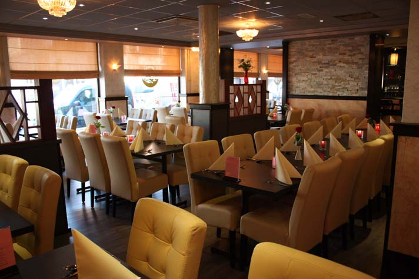
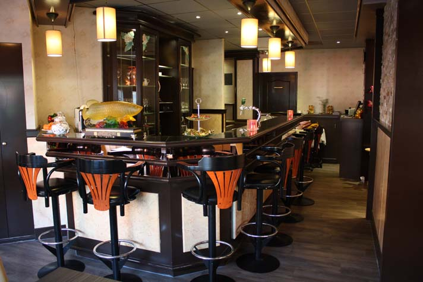
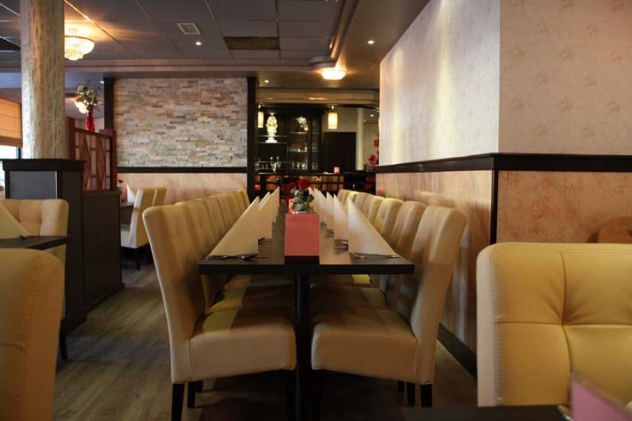
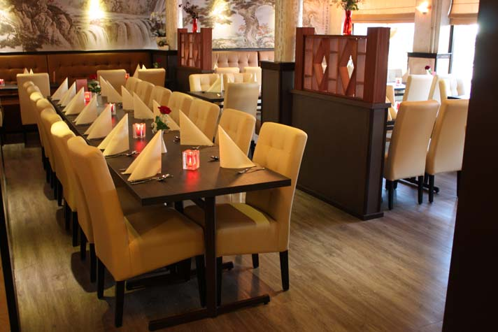
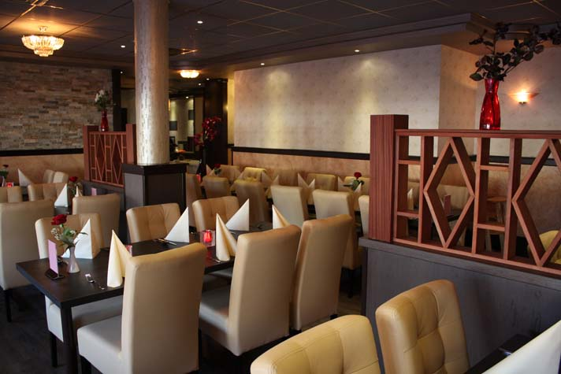
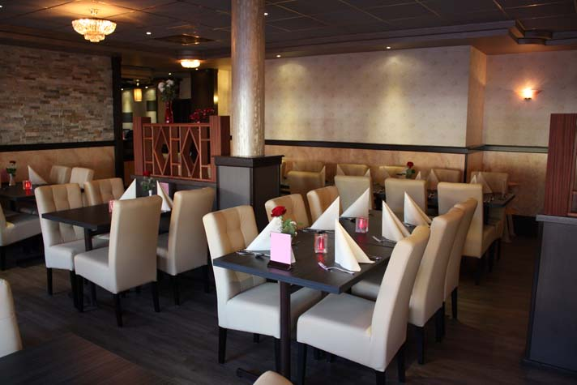
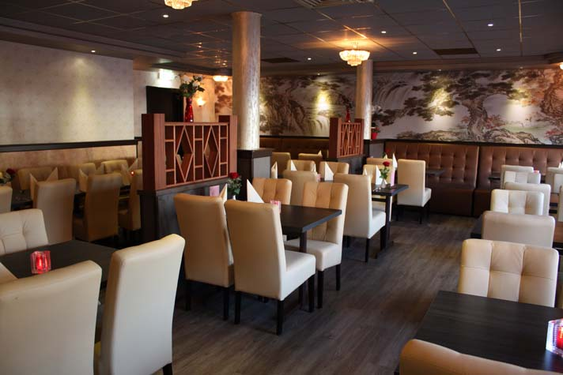
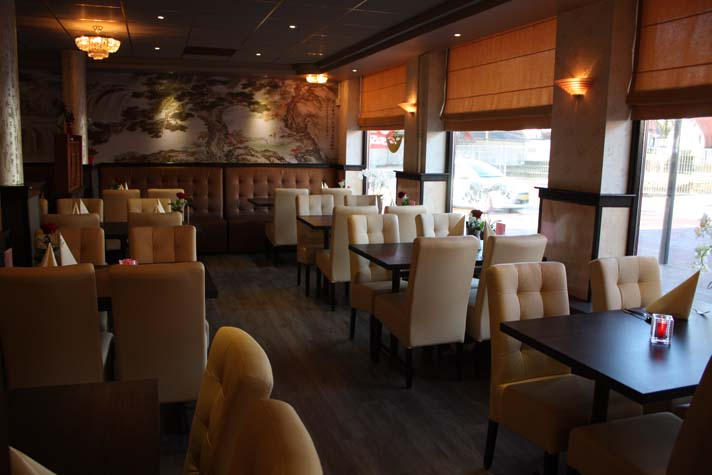
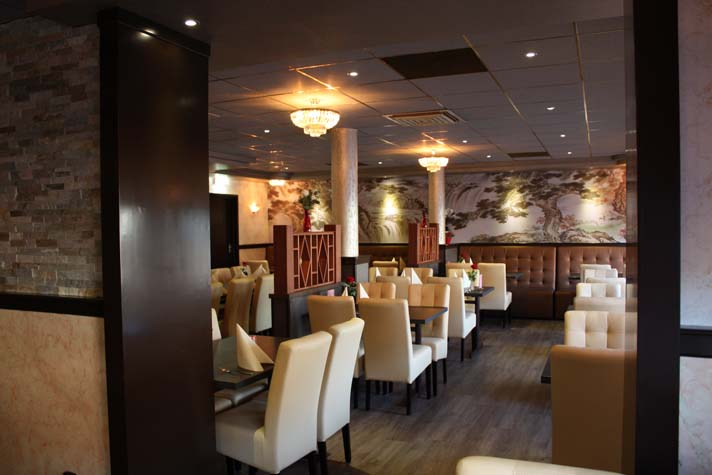
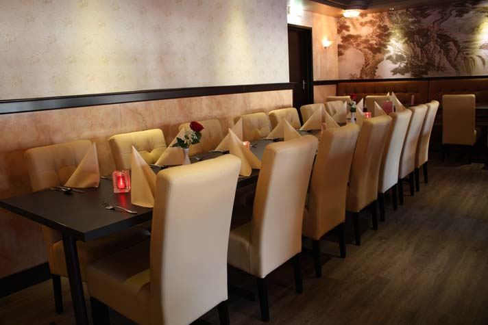
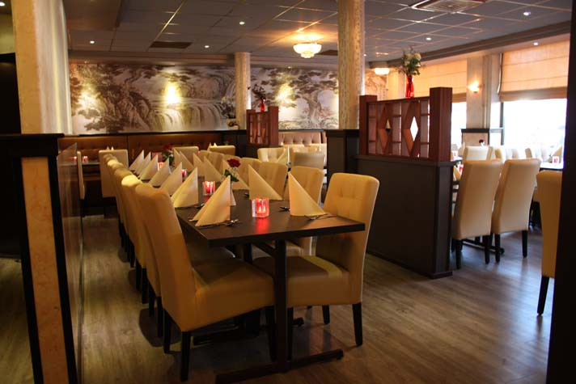
Per persoon. Met witte rijst € 1,50 extra, met nasi of bami € 2,00 extra, met mihoen of Chinese bami € 3,00 extra.
Natuurlijk kunt u bij Ling-Fa ook terecht voor afhaalmenu's. Daar hebben we een speciale uitgebreide kaart voor, met eigen nummers. Bovendien hebben we een speciale wachtruimte, waar u snel en goed geholpen wordt. Zo blijft de rust in het restaurant gewaarborgd.
Wilt u nog sneller geholpen worden? Geef dan vooraf telefonisch uw bestelling door, dan staat uw maaltijd klaar als u komt: 0341-553001. Online bestellen kan via lingfa.nl.
Toeslag bij afhalen: witte rijst € 1,20, nasi of bami € 1,30, mihoen of Chinese bami € 3,70 extra bij de gerechten met een sterretje.
De afhaalkaart heeft een eigen nummering en eigen prijzen. Twijfelt u over een prijs of nummer? Bel even, dan zeggen we het u.
U heeft binnenkort een feest en wilt daar zelf ook van genieten? Kom dan eens bij ons praten over de cateringmogelijkheden. Hoeveel gasten verwacht u? Wat voor gerechten wilt u laten serveren? Hoe is de ruimte? Als we dat doorgesproken hebben, komen wij met een uitgewerkt plan en een gedetailleerde offerte.
Uw feest is bij ons in goede handen. Wij zorgen voor uw gasten alsof het onze gasten zijn. Ling-Fa verzorgt ook graag bedrijfsuitjes of grote groepen: wij stellen een buffetmenu voor u samen aan de hand van uw persoonlijke wensen.
Inbegrepen: kroepoek, mini loempia, gebakken banaan, kerrietriangel, nasi, bami en eventueel rijst.
Schoon retour; anders € 10,00 voor schoonmaken.
Bel of mail om te reserveren. Binnenlopen kan natuurlijk ook.
Ling-Fa| Maandag | alleen op feestdagen |
|---|---|
| Dinsdag en woensdag | 16:00 - 21:30 |
| Donderdag t/m zondag | 12:00 - 21:30 |
| Feestdagen | 12:00 - 22:00 |